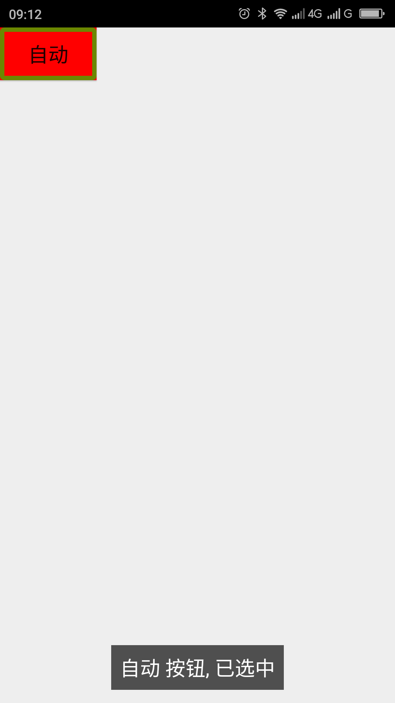

让标准控件选中时朗读出选中状态，未选中不朗读选中状态
【问题描述】
一些产品中为了美观和其他原因使用没有选中状态的标准控件通过背景颜色的改变来表示选中状态，如使用按钮（Button），这样的控件屏幕阅读器无法朗读出其选中状态，这时候会给屏幕阅读器用户带来一些不便。此解决方案达到的效果是：当控件聚焦的时候，选中时朗读出选中状态，未选中时不朗读出选中状态（减少听选中状态的时间）。当选中状态改变的时候及时播报出选中状态的改变。
【问题代码】
下面的代码达到的效果是点击按钮会改变选中状态，用背景颜色是红色来代表已选中，背景颜色白色代表未选中。
现在屏幕阅读器不会朗读出选中状态，屏幕阅读器用户无法知道此控件的选中状态。
注：本代码的布局请参看“附“;
package com.example.test;
import android.app.Activity;
import android.graphics.Color;
import android.os.Bundle;
import android.view.View;
import android.view.accessibility.AccessibilityEvent;
import android.view.accessibility.AccessibilityManager;
import android.view.accessibility.AccessibilityNodeInfo;
import android.widget.Button;
public class MainActivity extends Activity
{
private boolean mSelected = false;
@Override
public void onCreate(Bundle savedInstanceState)
{
super.onCreate(savedInstanceState);
setContentView(R.layout.activity_main);
Button b = (Button) findViewById(R.id.auto);
b.setBackgroundColor(mSelected?Color.RED:Color.WHITE);
}
public void auto(View source)
{
mSelected = !mSelected;
source.setBackgroundColor(mSelected?Color.RED:Color.WHITE);
}
}
【问题解决方案描述】
首先利用View.setAccessibilityDelegate()方法（低于api14可以使用v4扩展包内的ViewCompat。setAccessibilityDelegate()方法）给标准控件添加无障碍代理（View.AccessibilityDelegate），在代理中继承onInitializeAccessibilityNodeInfo()方法，在此方法中首先调用父类的实现，然后给调用AccessibilityNodeInfo的setSelected()方法设置选中状态，调用此方法设置的选中状态TalkBack朗读的时候是：当选中的时候会朗读出选中状态，未选中的时候不会朗读出选中状态。在点击事件中利用View的announceForAccessibility()方法发送一个通知，通知的内容是选中状态，如：“已选中”。此方法需api16才可用。在低于api16可以采用AccessibilityManager发送此事件的方法来播报（具体请参见代码）。
【解决方案】
下面的代码达到的效果是：当聚焦按钮的时候，如果控件未选中（也就是背景是白色）的时候不会朗读出选中状态，当按钮选中（也就是背景是红色）的时候会朗读出选中状态，当点击按钮改变其选中状态会及时朗读出当前的选中状态。
package com.example.test;
import android.app.Activity;
import android.graphics.Color;
import android.os.Bundle;
import android.view.View;
import android.view.accessibility.AccessibilityNodeInfo;
import android.widget.Button;
public class MainActivity extends Activity
{
private boolean mSelected = false;
@Override
public void onCreate(Bundle savedInstanceState)
{
super.onCreate(savedInstanceState);
setContentView(R.layout.activity_main);
Button b = (Button) findViewById(R.id.auto);
//给按钮添加无障碍代理（View.AccessibilityDelegate）
b.setAccessibilityDelegate(mDelegate);
b.setBackgroundColor(mSlected?Color.RED:Color.WHITE);
}
public void auto(View source)
{
mSelected = !mSelected;
source.setBackgroundColor(mSelected?Color.RED:Color.WHITE);
//利用announceForAccessibility()方法向用户及时播报选中状态
source.announceForAccessibility(mSelected?"已选中":"未选中");
/**
利用announceForAccessiblity()方法播报选中状态必须要api16才能调用
如果低于api16可以使用下面的方法
If (AccessibilityManager.getInstance(this).isEnabled()) {
AccessibilityEvent event = AccessibilityEvent.obtain(AccessibilityEvent.TYPE_ANNOUNCEMENT);
event.getText().add(mSelected?"已选中":"未选中");
source.sendAccessibilityEventUnchecked(event);}**/
private View.AccessibilityDelegate mDelegate= new View.AccessibilityDelegate() {
@Override
public void onInitializeAccessibilityNodeInfo(View host, AccessibilityNodeInfo info) {
super.onInitializeAccessibilityNodeInfo(host, info);
//调用setSelected()方法设置选中状态就可以达到选中的时候朗读选中状态，
//未选中的时候不朗读选中状态
info.setSelected(mSelected);
}
};
}
【前后效果图对比】
|  | |
| 优化前，开启Talkback，聚焦朗读“自动 按钮”；双击选中自动按钮，操作后无提示，重新聚焦，朗读“自动 按钮”，无选中状态提示； | 优化后，开启Talkback，聚焦朗读“自动 按钮”；双击选中自动按钮，操作后提示“已选中”，重新聚焦，朗读“自动 按钮 已选中”，有选中状态提示； |